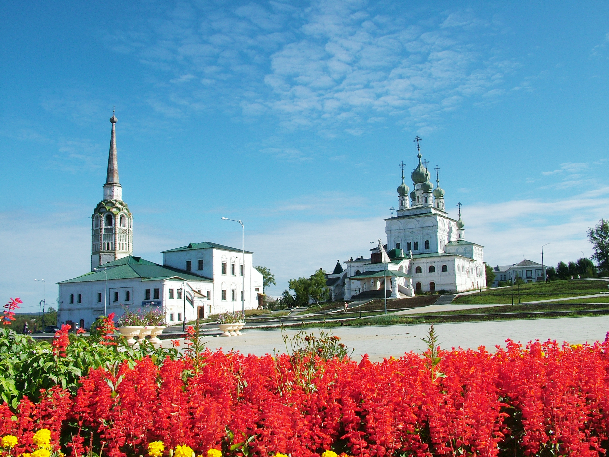
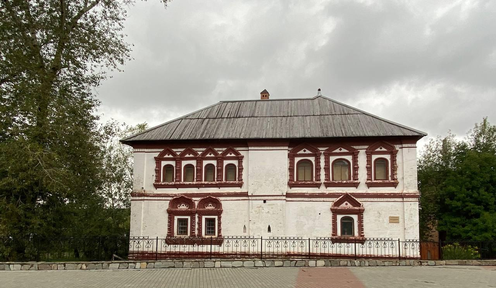
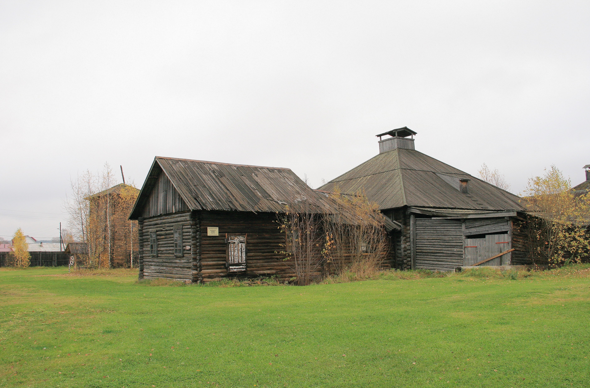
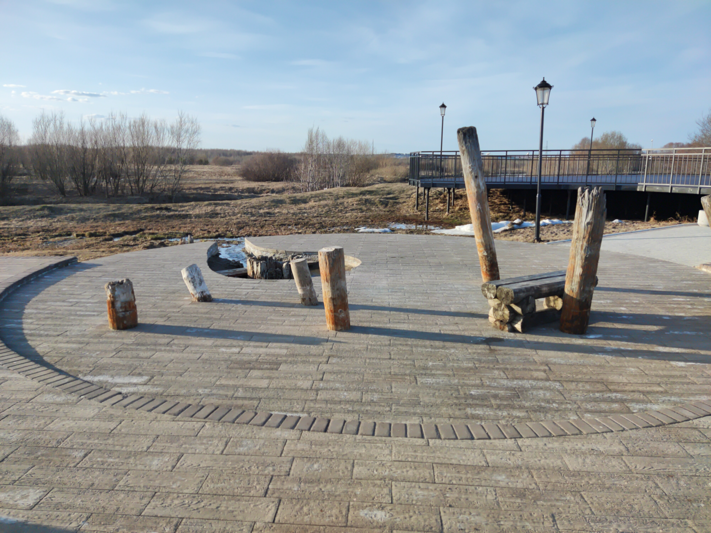
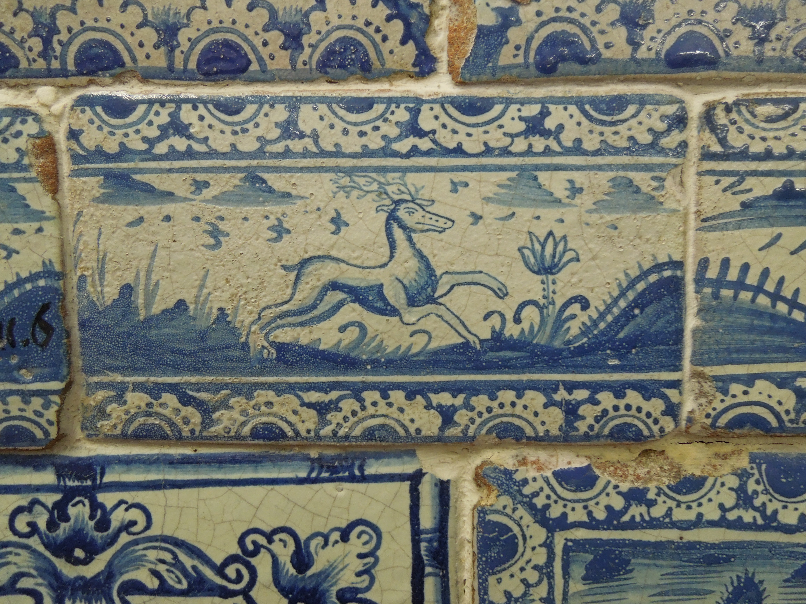
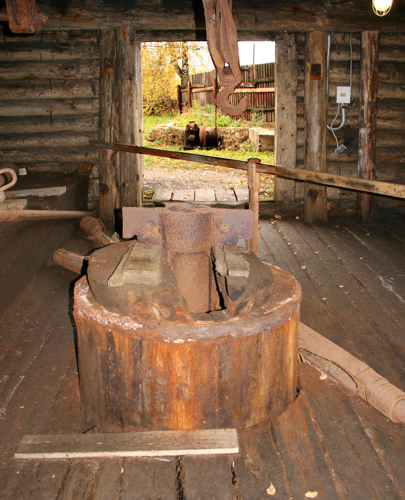

СОЛЯНАЯ СТОЛИЦА РОССИИ / ОСН. 1430 ГОД
Соль Великой Перми
Шесть веков живой истории на реке Усолке: от древних рассольных колодцев Калинниковых до крупнейшего в мире калийного бассейна и шедевров уральского каменного барокко.
01 — Архитектура & Память
Монументы, создавшие эпоху
-
/01
Троицкий собор и наклонная колокольня
Жемчужина русской каменной архитектуры XVII века (1684–1697 гг.). Стены собора украшены уникальной фигурной кирпичной кладкой и изразцовыми поясами. Рядом возвышается 62-метровая Соборная колокольня — уральская «падающая башня», отклонение шпиля которой от вертикали превышает 2 метра.

-
/02
Дом воеводы и тайные подземелья
Построенный в 1688 году, Дом воеводы является старейшим каменным гражданским зданием на всем Урале. Толщина стен достигает двух метров, внутри скрыты потайные ходы и внутристенные переходы, связывавшие резиденцию с соборами и берегом реки Усолки.

-
/03
Музей-заповедник «Сользавод»
Усть-Боровской солеваренный завод (1882 г.) — единственный в мире полностью сохранившийся ансамбль деревянного промышленного зодчества соледобычи. Рассолоподъемные башни, гигантские лари, соляные варницы и амбары передают дух эпохи расцвета пермской соли.

-
/04
Людмилинская соляная скважина
Пробуренная в 1906 году купцом И. В. Рязанцевым скважина неожиданно дала рассол с высоким содержанием калия. Это геологическое открытие привело к обнаружению Верхнекамского месторождения калийно-магниевых солей, занимающего ведущее место на мировом рынке.

-
/05
Соликамские многоцветные изразцы
В XVII–XVIII веках Соликамск был одним из главных центров русского изразцового искусства. Рельефные полихромные плиты с изображениями птицы Сирин, двуглавых орлов, диковинных зверей и растительных орнаментов украшали фасады храмов и печи боярских покоев.

02 — Мощь Недр
Цифры планетарного масштаба
разведанные запасы сильвинита и карналлита
непрерывной соляной летописи с 1430 года
глубина шахтных стволов рудников Уралкалия
Соборная площадь
Ансамбль Торговой площади: Троицкий собор, Воскресенская церковь и 62-метровая звонница с наклоном. Место, где сходилась вся торговая жизнь Северного Урала.
Александровская башня
Уникальная рассолоподъемная башня Усть-Боровского завода. Построена без единого гвоздя из вековых лиственниц прямо над соляной скважиной глубиной более 100 саженей.

Скважина Рязанцева
Людмилинская соляная труба — памятник промышленной истории, с которого началось исследование и освоение гигантских запасов калийных солей России.
Палаты воеводы
Мощные сводчатые потолки, кованые решетки, внутристенные лабиринты и богатейшая коллекция уральских печных изразцов эпохи Петра Великого.
03 — Летопись & Факты
То, о чем спрашивают чаще всего
Именно в Соликамске зародилось это знаменитое прозвище. Местные соленосы переносили на плечах огромные 80-килограммовые мешки с солью («кули»). Соляная пыль осыпалась на шею и уши, от пота и трения кожа воспалялась, краснела и шелушилась. Соленоса всегда узнавали по характерным «солёным ушам».
Да, соликамская Соборная колокольня (высота 62 метра, возведена в 1713 году) действительно наклонена. Из-за песчаных грунтов и подземных грунтовых вод она дала осадку. Отклонение шпиля от вертикали составляет более 2 метров, превращая ее в уральскую сестру Пизанской башни.
Усть-Боровской солеваренный завод — это единственный в мире промышленный деревянный памятник солеварения XIX века, сохранившийся в полной аутентичности. Здесь можно войти внутрь варницы, увидеть огромную сковороду («цырен»), на которой выпаривали рассол, и подняться к рассолоподъемной башне.
Вода Людмилинской скважины имеет уникальный минеральный состав: она насыщена хлоридами натрия, калия и магния, а также йодом и бромом. Температура источника круглый год сохраняется около +4°C. Купание в ней считается целебным, а вокруг благоустроен живописный сквер.
Расстояние от Перми составляет около 200 километров на север. Время в пути на автомобиле или комфортабельном скоростном автобусе через Полазну и Березники занимает около 2,5–3 часов по живописной уральской трассе.
Прикоснитесь к земле,
вскормившей Россию
От древних варниц на Усолке до гигантских калийных горизонтов — Соликамск ждет путешественников, исследователей и ценителей русской старины.